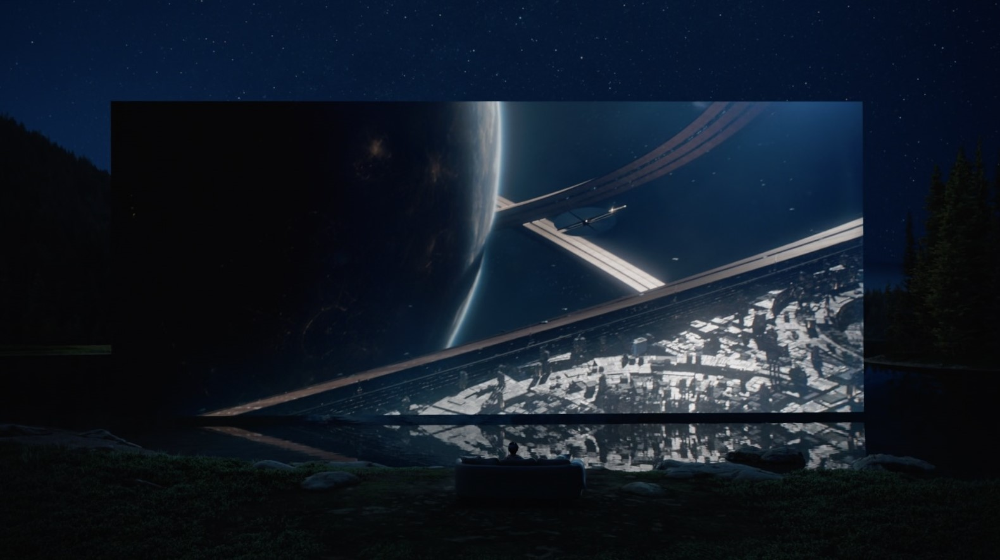

This is
VISION
PRO
Meet Vision Pro
The gateway to Spatial Computing, vision Pro blends digital and real-world interactions seamlessly. Transform your workspace, relive memories, enjoy immersive entertainment and connect in ways never imagined before

your apps live in your home now.
VisionOS, built on the core of macOS, iOS, and iPadOS, powers immersive spatial experiences on Apple Vision Pro. You can navigate using just your eyes, hands, and voice, making interactions feel natural and almost magical. Just glance at an item to focus on it, tap your fingers to select, and type using a virtual keyboard or dictation.
groundbreaking capabilities come with extraordinary power.
The Vision Pro is powered by state-of-the-art Apple Silicon chips, including the M2, which drives our powerful line of MacBooks and iPads, and the new R1 chip, specifically designed to meet the demands of spatial computing

More Pixels Than 4K TV, Per Eye.
With 23 million pixels, the custom micro-OLED display delivers breathtaking clarity and vivid colors. A specially crafted three-element lens ensures the display surrounds your view, creating a truly immersive experience

Relive Memories all over again.

Apple Vision Pro introduces a new way to capture and relive your memories with its 3D camera. It allows you to take stunning spatial photos and videos in 3D, which you can later experience with Spatial Audio, making those moments feel more vivid than ever.
Your existing photo and video library is displayed in an impressive scale, enhancing the viewing experience. Even panoramas become immersive, wrapping around you as if you're right where they were taken. Additionally, you can record spatial videos using your Iphone (15 Pro or Higher) and enjoy them on the Vision Pro for a truly immersive experience.
going in deep🌊...
The ultimate theater. Wherever you are.
Apple Vision Pro can transform any room into your own personal theater. Expand your movies, shows, and games to your perfect size and experience them in Spatial Audio. Apple Immersive Video puts you in the center of the action with mind‑blowing immersion. And with more pixels than a 4K TV for each eye, you can enjoy stunning content wherever you are — on a long flight or the couch at home.
A workspace with infinite space.
With Apple Vision Pro, your workspace knows no bounds. Arrange everything you need, however you like, across your entire environment. Effortlessly integrate your Mac workflows with the Mac Virtual Display. Enhance your experience by connecting a Magic Keyboard, Magic Trackpad, or other Bluetooth accessories for expanded navigation. Plus, SharePlay in FaceTime lets you collaborate with colleagues in real-time, working together on apps as if you were in the same room.